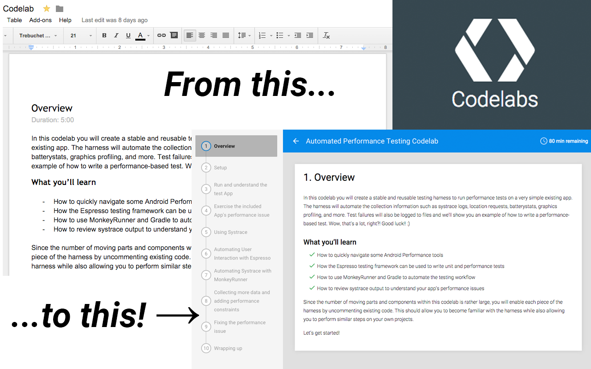

From this… to this!
Write in Google Docs. Publish and iterate in Codelabs. Toggle between both with a single toolbar click.
- On a Google Doc? Open its Codelab preview instantly.
- On a Codelab? We fetch its
codelab.jsonto jump straight to the source Doc. - Smart action state: The button only enables on supported pages.
- No tracking: Works entirely in your browser. No analytics. No ads.
Why you’ll love it
- Faster authoring feedback loop
- Zero configuration
- Clean Manifest V3, service worker based

Minimal permissions
tabs— read the active tab’s URL to know what to open.https://codelabs.developers.google.com/*— fetch the smallcodelab.jsonfile on Codelabs pages.
That’s it — no access to unrelated sites, no background data collection.
How it works
- Click the toolbar button on a supported page.
- The extension checks the current URL and decides the action.
- It opens either the preview or the source Doc in a new tab.